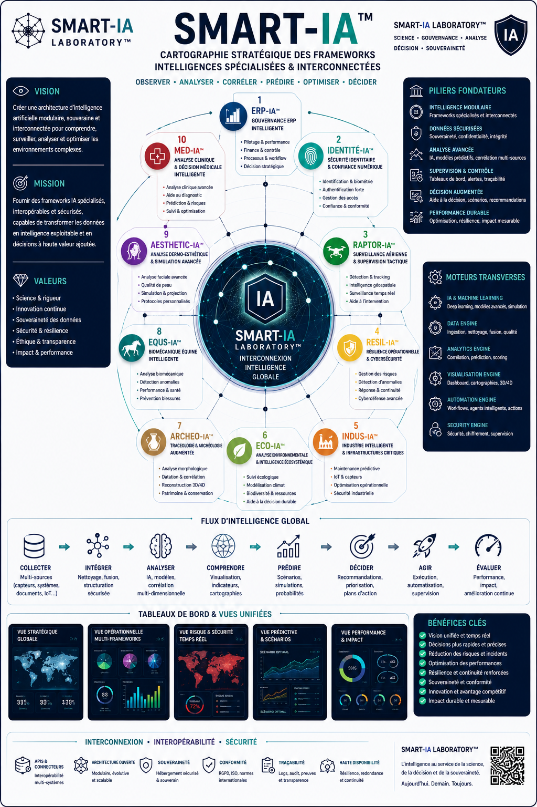

PÔLE STRATÉGIQUE ENTREPRISE™
- ERP-IA™
- STAT-IA™
- TRUST-IA COMPLIANCE™
- IDENTITÉ-IA™
Advanced Strategic Artificial Intelligence Research
___
Une architecture de frameworks IA conçue pour transformer
les données complexes en décisions exploitables.
CARTOGRAPHIE IA™ structure l’ensemble des frameworks, sous-couches analytiques, moteurs décisionnels et domaines stratégiques du SMART-IA Laboratory™.
Cette architecture permet de visualiser les interactions entre gouvernance, cybersécurité, ERP, industrie, biomécanique, recherche scientifique, conformité et intelligence décisionnelle.
CARTOGRAPHIE IA™ agit comme une vue globale de l’écosystème SMART-IA™ afin de comprendre les relations, les corrélations et les périmètres analytiques des frameworks.
Une vue globale des frameworks SMART-IA™, de leurs interconnexions analytiques, des moteurs transverses, des flux décisionnels et de l’architecture Laboratory™.

SMART-IA Laboratory™ constitue le noyau principal de gouvernance analytique, de supervision décisionnelle et d’architecture IA stratégique.
SMART-IA™ ne se limite pas à l’usage d’un simple LLM.
Le laboratoire structure l’intelligence artificielle comme une discipline d’architecture, de supervision, de corrélation analytique et de gouvernance stratégique.
Chaque framework agit comme une couche spécialisée capable de transformer les données complexes en lecture décisionnelle exploitable.
SMART-IA Laboratory™ Architecture
Gouvernance • Cybersécurité • Industrie • Recherche • ERP • Intelligence